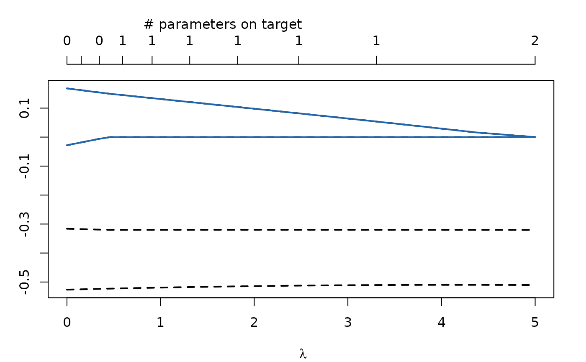
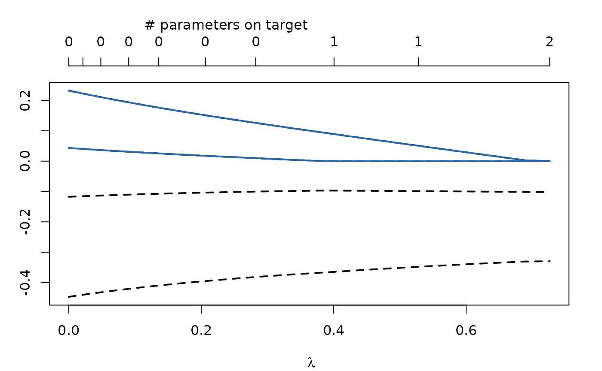
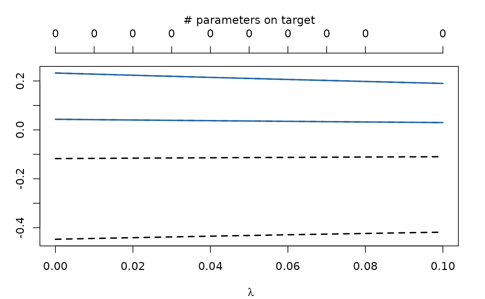
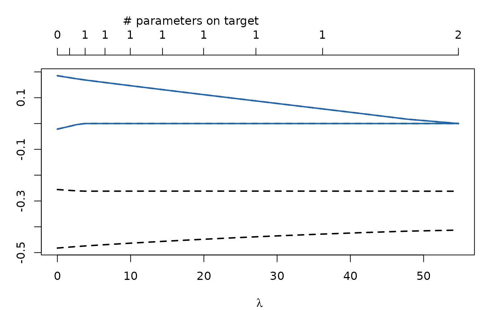
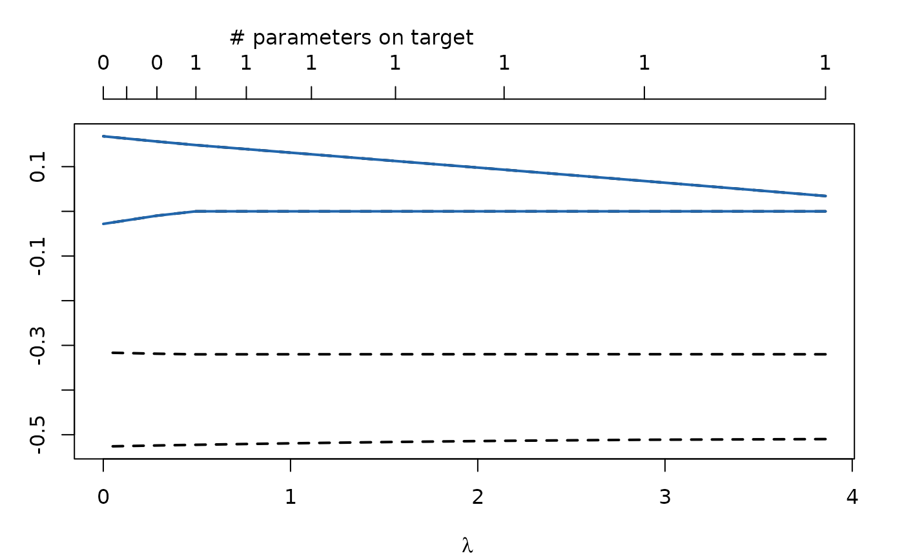

regCtsem
regCtsem.RmdGeneral Introduction
Regularized Continuous Time Structural Equation Models (regCtsem) implements least absolute shrinkage and selection operator (LASSO; Tibshirani, 1996) and adaptive LASSO (Zou, 2006) regularization for models of the following form:
\[ \begin{aligned} \text{d}\pmb{\eta}(t) &= \Big(\pmb A \boldsymbol{\eta}(t) + \pmb b + \pmb\kappa \Big) \text{d} t + \pmb G\text d \pmb W(t)\\ \end{aligned} \] \(\pmb\eta (t)\) is a vector with states of the latent variables \(\pmb \eta\) at time point \(t\). \(\mathbf A\) is the drift matrix with auto-effects in the diagonal and cross-effects in the off-diagonal, \(\pmb b\) is a vector with continuous time intercepts, \(\pmb \kappa\) allows for trait variance and \(\pmb G\) is the diffusion matrix which allows modulation of the stochastic part of the model (the Wiener process \(\mathbf W\)). The latent variables in \(\pmb \eta\) are related to manifest measurements by the following measurement equation:
\[ \pmb y(t_u) = \pmb d + \pmb C\pmb \eta(t_u) + \pmb \varepsilon_{t_u} \] Here, \(\pmb y(t_u)\) is a vector with observations at time \(t_u\) of measurement occasion \(u\), \(\pmb d\) is a vector with discrete time intercepts, \(\pmb C\) a matrix with loadings, and \(\pmb \varepsilon_{t_u}\) a vector with residuals. A thorough introduction to continuous time structural equation models is provided by Voelkle et al. (2012).
In R, models of the form shown above can, for instance, be fitted with the packages ctsemOMX and ctsem (Driver et al., 2017) which regCtsem builds on.
Regularization
regCtsem extends ctsemOMX by allowing for LASSO and adaptive LASSO regularization (see Jacobucci et al., 2016 and Huang et al., 2017 for an introduction to regularized SEM). The objective function is given by \[f(\pmb\theta) = L(\pmb\theta) + N\sum_{j\in J}\lambda_j|\theta_j - \tau_j|\] where \(f(\pmb\theta)\) is the regularized objective function, \(L(\pmb \theta)\) is the -2 log Likelihood of the model \(N\) is the sample size and \(\sum_{j\in J}\lambda_j|\theta_j - \tau_j|\) is the penalty term. Here, \(J\) is a set of parameter indices and \(\theta_{j,j\in J}\) are the parameters which are to be regularized. This will become more clear in the following examples. In the penalty term \(\tau_j\) is the target towards which the parameter \(\theta_j\) is regularized. By default this is set to \(0\). \(\lambda_j\) controls the relative importance of the -2 log Likelihood and the penalty term. For larger \(\lambda_j\) parameter \(\theta_j\) will be pulled towards \(\tau_j\). By default the same \(\lambda\) is used for all regularized parameters. This is shown in the figure below, where the \(x\)-axis shows the \(\lambda\) values and the blue lines are two regularized parameters. For larger \(\lambda\) these are pulled towards the target \(0\).

Using LASSO and adaptive LASSO regularization automatically generates models of increasing sparsity. Among these models we can select the best generalizing one based on cross-validation or information criteria.
Getting Started
As outlined above regCtsem builds on ctsemOMX. Many models fitted with ctsemOMX can directly be passed to regCtsem. Therefore, we highly recommend that you familiarize yourself with ctsemOMX. In the most basic setup regCtsem expects a fitted model from ctsemOMX and the data set in wide format as well as a vector with names of the parameters which should be regularized. The following example is taken from the documentation of ctFit:
library(regCtsem)
set.seed(38723)
## Directly taken from ?ctFit:
###Example from Voelkle, Oud, Davidov, and Schmidt (2012) - anomia and authoritarianism.
data(AnomAuth)
AnomAuthmodel <- ctModel(LAMBDA = matrix(c(1, 0, 0, 1), nrow = 2, ncol = 2),
Tpoints = 5, n.latent = 2, n.manifest = 2, MANIFESTVAR=diag(0, 2), TRAITVAR = NULL)
AnomAuthfit <- ctFit(AnomAuth, AnomAuthmodel)
# regularization
regularizedModel1 <- regCtsem(ctsemObject = AnomAuthfit,
dataset = AnomAuth,
regIndicators = c("drift_eta2_eta1", "drift_eta1_eta2"))By default regCtsem will use 50 different values for \(\lambda\). The maximally required \(\lambda\) is automatically computed (\(\lambda_\max\)) and values in between \(0\) and \(\lambda_\max\) are generated with getCurvedLambda() (see ?getCurvedLambda). More \(\lambda\) values can be requested with the lambdasAutoLength argument (e.g., lambdasAutoLength = 100). Additionally, regCtsem will default to generating more \(\lambda\) values close to \(0\) and less values close to \(\lambda_\max\) (see ?getCurvedLambda). This can be changed with the lambdasAutoCurve argument (see ?regCtsem for more details). Finally, specific \(\lambda\) values can be passed to the function as follows:
regularizedModel2 <- regCtsem(ctsemObject = AnomAuthfit,
dataset = AnomAuth,
lambdas = seq(0,.1,.01),
regIndicators = c("drift_eta2_eta1", "drift_eta1_eta2"))This allows for further “zooming in” on specific regions.
Let’s plot the regularization trajectories:
plot(regularizedModel1)
plot(regularizedModel2)
If 50 \(\lambda\) values are used (the default), this internally results in 50 different models with increasing sparsity. An important question now is how the best model can be found. By default regCstem will compute the AIC and BIC for each of these models. They can be accessed with:
regularizedModel1$fit[,1:5]
#> 0 0.00388266682395807 0.00795214091769518
#> regM2LL 23415.93 23418.83 23421.85
#> m2LL 23415.93 23415.94 23415.98
#> AIC 23443.93 23443.94 23443.98
#> BIC 23526.66 23526.67 23526.71
#> estimatedParameters 14.00 14.00 14.00
#> 0.0122174101644433 0.016687894882666
#> regM2LL 23424.98 23428.23
#> m2LL 23416.05 23416.16
#> AIC 23444.05 23444.16
#> BIC 23526.78 23526.88
#> estimatedParameters 14.00 14.00The best model can be extracted with the summary function:
summary(regularizedModel1, criterion = "AIC")
#> [[1]]
#> [1] "|---regCtsem results--------------------------------------------------|"
#>
#> [[2]]
#> [1] "The best AIC value was observed for:"
#>
#> $lambda
#> [1] 0
#>
#> [[4]]
#> [1] " --- Parameter estimates: --- "
#>
#> $ParameterEstimates
#> DIFFUSION_eta1_eta1 DIFFUSION_eta2_eta1 DIFFUSION_eta2_eta2 drift_eta1
#> 0.47324300 -0.00461089 0.15450974 -0.44728217
#> drift_eta1_eta2 drift_eta2 drift_eta2_eta1 mm_Y1
#> 0.23249715 -0.11746667 0.04329256 2.68744439
#> mm_Y2 T0m_eta1 T0m_eta2 T0VAR_eta1_eta1
#> 2.86338104 -0.18401247 -0.02065659 0.63286133
#> T0VAR_eta2_eta1 T0VAR_eta2_eta2
#> 0.24473121 0.45757744
#>
#> [[6]]
#> [1] " --- Fit: --- "
#>
#> $fit
#> regM2LL m2LL AIC BIC
#> 23415.93 23415.93 23443.93 23526.66
#> estimatedParameters
#> 14.00
#>
#> [[8]]
#> [1] "|----------------------------------------------------------------------|"In this case the unregularized model outperforms the regularized models.
Alternatively, cross-validation can be used. However, to this end the model must be refit requesting cross-validation. Depending on the model and the number of cross-validation sets requested, this can take some time.
regularizedModel <- regCtsem(ctsemObject = AnomAuthfit,
dataset = AnomAuth,
lambdas = seq(0,.1,.01),
regIndicators = c("drift_eta2_eta1", "drift_eta1_eta2"),
autoCV = "kFold", # k-Fold cross-validation
k = 3 # k = 3 folds
)Now the fit for the cross-validation is given in the regularizedModel object:
regularizedModel$fit[,1:5]
#> [,1] [,2] [,3] [,4] [,5]
#> CV1 7764.468 7764.078 7763.778 7763.518 7763.314
#> CV2 7889.158 7889.651 7890.185 7890.765 7891.380
#> CV3 7789.438 7789.375 7789.357 7789.387 7789.478
#> mean 7814.355 7814.368 7814.440 7814.557 7814.724Finally, note that regCtsem internally translates the models to C++ (using RcppArmadillo; Eddelbuettel & Sanderson, 2014) with the function regCtsem::cpptsemFromCtsem (see ?cpptsemFromCtsem). Currently some specific model settings from ctsemOMX are not available in regCtsem. regCtsem will throw an error if it encounters such cases.
LASSO and adaptive LASSO
A difficulty in LASSO regularized CTSEM is that the same \(\lambda\) is used for all regularized parameters. This is only justified if the regularized parameters have the same units (i.e., they all have the same scale). In latent variable models this is difficult to control. Here, regCtsem offers an approximate standardization. To this end the T0-variance or the asymptotic diffusion can be used:
regularizedModel <- regCtsem(ctsemObject = AnomAuthfit,
dataset = AnomAuth,
lambdas = seq(0,.1,.01),
regIndicators = c("drift_eta2_eta1", "drift_eta1_eta2"),
standardizeDrift = "T0VAR")
regularizedModel <- regCtsem(ctsemObject = AnomAuthfit,
dataset = AnomAuth,
lambdas = seq(0,.1,.01),
regIndicators = c("drift_eta2_eta1", "drift_eta1_eta2"),
standardizeDrift = "asymptoticDiffusion")Also the adaptive LASSO can be thought of as a form of standardization. By default \(\lambda_j = \frac{\lambda}{|\hat\theta_j|}\), where \(\hat\theta_j\) is the maximum likelihood estimate for \(\theta_j\).
regularizedModel <- regCtsem(ctsemObject = AnomAuthfit,
dataset = AnomAuth,
regIndicators = c("drift_eta2_eta1", "drift_eta1_eta2"),
penalty = "adaptiveLASSO")
plot(regularizedModel)Full Information Maximum Likelihood and Kalman Filter
The -2 log Likelihood \(L(\pmb \theta)\) shown above can be computed with the Full Information Maximum Likelihood (FIML) procedure and the Kalman filter. They result in the same fit but might show very different run times. In general if the sample size is large, the number of unique time intervals between measurement occasions is small, and many individuals were observed at the same time points FIML will be much faster. On the other hand if the sample size is small, most time intervals are unique, and there is a large number of time points the Kalman filter will be much faster. To switch between both estimation procedures, we have to change the objective in ctFit first:
startFIML <- Sys.time()
AnomAuthfitFIML <- ctFit(AnomAuth, AnomAuthmodel,
objective = "mxRAM") # Use FIML
endFIML <- Sys.time()
startKalman <- Sys.time()
AnomAuthfitKalman <- ctFit(AnomAuth, AnomAuthmodel,
objective = "Kalman") # use Kalman filter
endKalman <- Sys.time()If we look at the run times for these examples, we will see that, for our example, FIML is a lot faster:
print(endFIML - startFIML)
#> Time difference of 0.8063128 secs
print(endKalman - startKalman)
#> Time difference of 31.4024 secsIf a model is fitted with the Kalman filter in ctsemOMX and then passed to regCtsem, regCtsem will also use the Kalman filter (don’t run the following code, it will take a very long time):
regularizedModel <- regCtsem(ctsemObject = AnomAuthfitKalman,
dataset = AnomAuth,
regIndicators = c("drift_eta2_eta1", "drift_eta1_eta2"),
penalty = "adaptiveLASSO")Now, to give an example where the Kalman filter excels:
set.seed(175446)
## define the population model:
# set the drift matrix. Note that drift eta_1_eta2 is set to equal 0 in the population.
ct_drift <- matrix(c(-.3,.2,0,-.5), ncol = 2)
generatingModel<-ctsem::ctModel(Tpoints=100,n.latent=2,
n.TDpred=0,n.TIpred=0,n.manifest=2,
MANIFESTVAR=diag(0,2),
LAMBDA=diag(1,2),
DRIFT=ct_drift,
DIFFUSION=matrix(c(.5,0,0,.5),2),
CINT=matrix(c(0,0),nrow=2),
T0MEANS=matrix(0,ncol=1,nrow=2),
T0VAR=diag(1,2), type = "omx")
# simulate a training data and testing data set
traindata <- ctsem::ctGenerate(generatingModel,n.subjects = 10, wide = TRUE)
## Build the analysis model. Note that drift eta1_eta2 is freely estimated
# although it is 0 in the population.
myModel <- ctsem::ctModel(Tpoints=100,n.latent=2,n.TDpred=0,
n.TIpred=0,n.manifest=2,
LAMBDA=diag(1,2),
MANIFESTVAR=diag(0,2),
CINT=matrix(c(0,0),nrow=2),
DIFFUSION=matrix(c('eta1_eta1',0,0,'eta2_eta2'),2),
T0MEANS=matrix(0,ncol=1,nrow=2),
T0VAR="auto", type = "omx")
fit_myModel <- ctFit(dat = traindata, ctmodelobj = myModel, objective = "Kalman")
# select DRIFT values:
regIndicators <- c("drift_eta2_eta1", "drift_eta1_eta2")
## Optimization with GIST:
regModel <- regCtsem::regCtsem(ctsemObject = fit_myModel,
dataset = traindata,
regIndicators = regIndicators,
lambdasAutoLength = 20
)
plot(regModel)
Extracting the Best Parameters and Models
The best parameters can be extracted as follows:
getFinalParameters(regCtsemObject = regModel,
criterion = "AIC")
#> $criterion
#> [1] "AIC"
#>
#> $lambda
#> [1] 3.794832
#>
#> $parameters
#> T0var_eta1 T0var_eta2 T0var_eta2_eta1 drift_eta1 drift_eta1_eta2
#> -0.299051873 -0.265037440 0.146354259 -0.262008349 0.000000000
#> drift_eta2 drift_eta2_eta1 eta1_eta1 eta2_eta2 mm_Y1
#> -0.474233915 0.168628834 -0.699650904 -0.685913204 0.059504253
#> mm_Y2
#> 0.009090133By default, these parameters will returned in raw form; that is, in the form in which they are implemented internally (e.g., covariances are implemented with the log-Cholesky parameterization; Pinheiro & Bates, 1996). To get the transformed parameters set raw = FALSE:
getFinalParameters(regCtsemObject = regModel,
criterion = "AIC",
raw = F)
#> $criterion
#> [1] "AIC"
#>
#> $lambda
#> [1] 3.794832
#>
#> $parameters
#> DIFFUSION_eta1_eta1 DIFFUSION_eta2_eta1 DIFFUSION_eta2_eta2 drift_eta1
#> 0.245480430 0.000000000 0.255101858 -0.262008349
#> drift_eta1_eta2 drift_eta2 drift_eta2_eta1 mm_Y1
#> 0.000000000 -0.474233915 0.168628834 0.059504253
#> mm_Y2 T0VAR_eta1_eta1 T0VAR_eta2_eta1 T0VAR_eta2_eta2
#> 0.009090133 0.553031306 0.109209463 0.613400525The best model can be extracted as follows:
finalModel <- getFinalModel(regCtsemObject = regModel,
criterion = "AIC")
#> Best fit for AIC was observed for lambda = 3.79483223498423.While this model is implemented in C++, many of its components are accessible with the $ operator:
finalModel$DRIFTValues
#> [,1] [,2]
#> [1,] -0.2620083 0.0000000
#> [2,] 0.1686288 -0.4742339Saving and Restoring Models
As usual objects created with regCtsem can be saved as follows:
save(regModel, file = "regModel.RData")However, when loading the model in the next session the underlying C++ object will be lost. This model can restored:
Practical Considerations
Fitting regularized CTSEM to empirical data can be challenging and requires several decisions for which we want to give some guidelines.
Selecting Regularized Parameters
In general any of the paraemters can be regularized with regCtsem. If you are unsure which parameters these might be, or what they are called in your model, use the following function:
showParameters(fit_myModel)
#> label model matrix row col value lbound ubound
#> 1 drift_eta1 ctsem DRIFT 1 1 -0.255694277 NA NA
#> 2 drift_eta1_eta2 ctsem DRIFT 1 2 -0.021711245 NA NA
#> 3 drift_eta2 ctsem DRIFT 2 2 -0.482393863 NA NA
#> 4 drift_eta2_eta1 ctsem DRIFT 2 1 0.185281955 NA NA
#> 5 eta1_eta1 ctsem DIFFUSIONbase 1 1 -0.702270347 NA NA
#> 6 eta2_eta2 ctsem DIFFUSIONbase 2 2 -0.683048161 NA NA
#> 7 mm_Y1 ctsem MANIFESTMEANS 1 1 0.059154164 NA NA
#> 8 mm_Y1 ctsem D 1 1 0.059154164 NA NA
#> 9 mm_Y2 ctsem MANIFESTMEANS 2 1 0.008901854 NA NA
#> 10 mm_Y2 ctsem D 2 1 0.008901854 NA NA
#> 11 T0var_eta1 ctsem T0VARbase 1 1 -0.296170291 NA NA
#> 12 T0var_eta2 ctsem T0VARbase 2 2 -0.262264074 NA NA
#> 13 T0var_eta2_eta1 ctsem T0VARbase 2 1 0.146853902 NA NAThis function will show you the labels and values of the parameters in the model.
Note that it is a lot easier to regularize the drift values, the loadings, the manifest or the latent means. All covariance parameters (T0VAR, values in \(\pmb G\), and manifest variances) are implemented with the log-Cholesky parameterization (Pinheiro & Bates, 1996) and you might get surprising results when regularizing them. Be sure to familiarize yourself with this implementation first before attempting to regularize any (co)variance parameters.
Regularizing Towards Specific Values
As mentioned above, parameters can also be regularized towards values other than \(0\). This is currently only supported with GIST as optimizer. For example:
regIndicators <- c("drift_eta2_eta1", "drift_eta1_eta2")
targetVector <- c("drift_eta2_eta1" = .5, "drift_eta1_eta2" = .5)
regModel <- regCtsem::regCtsem(ctsemObject = fit_myModel,
dataset = traindata,
regIndicators = regIndicators,
lambdasAutoLength = 20,
targetVector = targetVector
)Both regularized parameters are now regularized towards .5:
plot(regModel)“#parameters on target” refers to the number of parameters which are on their target values (here .5).
Regularizing parameters towards specific targets can be used to model selected parameters person-specific while regularizing them towards the group value (see Jacobucci & Grimm, 2018 for a similar approach). This feature is still experimental, but can be used as follows:
regIndicators <- c("drift_eta2_eta1", "drift_eta1_eta2")
subjectSpecificParameters <- c("drift_eta2_eta1", "drift_eta1_eta2")
regModel <- regCtsem(ctsemObject = fit_myModel,
dataset = traindata,
regIndicators = regIndicators,
lambdasAutoLength = 5, # 5 will not be enough, but this takes some time to execute
subjectSpecificParameters = subjectSpecificParameters
)
summary(regModel, criterion = "AIC")
#> [[1]]
#> [1] "|---regCtsem results--------------------------------------------------|"
#>
#> [[2]]
#> [1] "The best AIC value was observed for:"
#>
#> $lambda
#> [1] 5.079097
#>
#> [[4]]
#> [1] " --- Parameter estimates: --- "
#>
#> $ParameterEstimates
#> $ParameterEstimates$group1
#> DIFFUSION_eta1_eta1 DIFFUSION_eta2_eta1 DIFFUSION_eta2_eta2 drift_eta1
#> 0.244811720 0.000000000 0.253581971 -0.255692783
#> drift_eta1_eta2_G1 drift_eta2 drift_eta2_eta1_G1 mm_Y1
#> -0.021711245 -0.482393484 0.185281955 0.059152976
#> mm_Y2 T0VAR_eta1_eta1 T0VAR_eta2_eta1 T0VAR_eta2_eta2
#> 0.008902174 0.570321136 0.113663059 0.613192886
#>
#> $ParameterEstimates$group2
#> DIFFUSION_eta1_eta1 DIFFUSION_eta2_eta1 DIFFUSION_eta2_eta2 drift_eta1
#> 0.244811720 0.000000000 0.253581971 -0.255692783
#> drift_eta1_eta2_G2 drift_eta2 drift_eta2_eta1_G2 mm_Y1
#> -0.021711245 -0.482393484 0.185281955 0.059152976
#> mm_Y2 T0VAR_eta1_eta1 T0VAR_eta2_eta1 T0VAR_eta2_eta2
#> 0.008902174 0.570321136 0.113663059 0.613192886
#>
#> $ParameterEstimates$group3
#> DIFFUSION_eta1_eta1 DIFFUSION_eta2_eta1 DIFFUSION_eta2_eta2 drift_eta1
#> 0.244811720 0.000000000 0.253581971 -0.255692783
#> drift_eta1_eta2_G3 drift_eta2 drift_eta2_eta1_G3 mm_Y1
#> -0.021711245 -0.482393484 0.185281955 0.059152976
#> mm_Y2 T0VAR_eta1_eta1 T0VAR_eta2_eta1 T0VAR_eta2_eta2
#> 0.008902174 0.570321136 0.113663059 0.613192886
#>
#> $ParameterEstimates$group4
#> DIFFUSION_eta1_eta1 DIFFUSION_eta2_eta1 DIFFUSION_eta2_eta2 drift_eta1
#> 0.244811720 0.000000000 0.253581971 -0.255692783
#> drift_eta1_eta2_G4 drift_eta2 drift_eta2_eta1_G4 mm_Y1
#> -0.021711245 -0.482393484 0.185281955 0.059152976
#> mm_Y2 T0VAR_eta1_eta1 T0VAR_eta2_eta1 T0VAR_eta2_eta2
#> 0.008902174 0.570321136 0.113663059 0.613192886
#>
#> $ParameterEstimates$group5
#> DIFFUSION_eta1_eta1 DIFFUSION_eta2_eta1 DIFFUSION_eta2_eta2 drift_eta1
#> 0.244811720 0.000000000 0.253581971 -0.255692783
#> drift_eta1_eta2_G5 drift_eta2 drift_eta2_eta1_G5 mm_Y1
#> -0.021711245 -0.482393484 0.185281955 0.059152976
#> mm_Y2 T0VAR_eta1_eta1 T0VAR_eta2_eta1 T0VAR_eta2_eta2
#> 0.008902174 0.570321136 0.113663059 0.613192886
#>
#> $ParameterEstimates$group6
#> DIFFUSION_eta1_eta1 DIFFUSION_eta2_eta1 DIFFUSION_eta2_eta2 drift_eta1
#> 0.244811720 0.000000000 0.253581971 -0.255692783
#> drift_eta1_eta2_G6 drift_eta2 drift_eta2_eta1_G6 mm_Y1
#> -0.021711245 -0.482393484 0.185281955 0.059152976
#> mm_Y2 T0VAR_eta1_eta1 T0VAR_eta2_eta1 T0VAR_eta2_eta2
#> 0.008902174 0.570321136 0.113663059 0.613192886
#>
#> $ParameterEstimates$group7
#> DIFFUSION_eta1_eta1 DIFFUSION_eta2_eta1 DIFFUSION_eta2_eta2 drift_eta1
#> 0.244811720 0.000000000 0.253581971 -0.255692783
#> drift_eta1_eta2_G7 drift_eta2 drift_eta2_eta1_G7 mm_Y1
#> -0.021711245 -0.482393484 0.185281955 0.059152976
#> mm_Y2 T0VAR_eta1_eta1 T0VAR_eta2_eta1 T0VAR_eta2_eta2
#> 0.008902174 0.570321136 0.113663059 0.613192886
#>
#> $ParameterEstimates$group8
#> DIFFUSION_eta1_eta1 DIFFUSION_eta2_eta1 DIFFUSION_eta2_eta2 drift_eta1
#> 0.244811720 0.000000000 0.253581971 -0.255692783
#> drift_eta1_eta2_G8 drift_eta2 drift_eta2_eta1_G8 mm_Y1
#> -0.021711245 -0.482393484 0.185281955 0.059152976
#> mm_Y2 T0VAR_eta1_eta1 T0VAR_eta2_eta1 T0VAR_eta2_eta2
#> 0.008902174 0.570321136 0.113663059 0.613192886
#>
#> $ParameterEstimates$group9
#> DIFFUSION_eta1_eta1 DIFFUSION_eta2_eta1 DIFFUSION_eta2_eta2 drift_eta1
#> 0.244811720 0.000000000 0.253581971 -0.255692783
#> drift_eta1_eta2_G9 drift_eta2 drift_eta2_eta1_G9 mm_Y1
#> -0.021711245 -0.482393484 0.185281955 0.059152976
#> mm_Y2 T0VAR_eta1_eta1 T0VAR_eta2_eta1 T0VAR_eta2_eta2
#> 0.008902174 0.570321136 0.113663059 0.613192886
#>
#> $ParameterEstimates$group10
#> DIFFUSION_eta1_eta1 DIFFUSION_eta2_eta1 DIFFUSION_eta2_eta2 drift_eta1
#> 0.244811720 0.000000000 0.253581971 -0.255692783
#> drift_eta1_eta2_G10 drift_eta2 drift_eta2_eta1_G10 mm_Y1
#> -0.021711245 -0.482393484 0.185281955 0.059152976
#> mm_Y2 T0VAR_eta1_eta1 T0VAR_eta2_eta1 T0VAR_eta2_eta2
#> 0.008902174 0.570321136 0.113663059 0.613192886
#>
#>
#> [[6]]
#> [1] " Parameters were regularized towards the following values:"
#>
#> $Targets
#> drift_eta2_eta1_G1 drift_eta2_eta1_G2 drift_eta2_eta1_G3 drift_eta2_eta1_G4
#> 0.18528196 0.18528196 0.18528196 0.18528196
#> drift_eta2_eta1_G5 drift_eta2_eta1_G6 drift_eta2_eta1_G7 drift_eta2_eta1_G8
#> 0.18528196 0.18528196 0.18528196 0.18528196
#> drift_eta2_eta1_G9 drift_eta2_eta1_G10 drift_eta1_eta2_G1 drift_eta1_eta2_G2
#> 0.18528196 0.18528196 -0.02171125 -0.02171125
#> drift_eta1_eta2_G3 drift_eta1_eta2_G4 drift_eta1_eta2_G5 drift_eta1_eta2_G6
#> -0.02171125 -0.02171125 -0.02171125 -0.02171125
#> drift_eta1_eta2_G7 drift_eta1_eta2_G8 drift_eta1_eta2_G9 drift_eta1_eta2_G10
#> -0.02171125 -0.02171125 -0.02171125 -0.02171125
#>
#> [[8]]
#> [1] " --- Fit: --- "
#>
#> $fit
#> regM2LL m2LL AIC BIC
#> 2241.850 2241.850 2259.850 2262.573
#> estimatedParameters
#> 9.000
#>
#> [[10]]
#> [1] "|----------------------------------------------------------------------|"The group-indicator in the summary refers to the individuals in the data set. Note that such models will take a relatively long time to run.
Avoiding Local Minima
When working with real data local minima appear to be relatively common. regCtsem therefore makes extensive use of multiple starting values and additionally relies on approximating the solution with established optimizers. These safety features come at a considerable increase in runtime and adjusting the settings can - in turn - speed up the computation at the price of an increased risk of running into local minima. We recommend using the implemented safety features when working with empirical data; with simulated data we observed that local minima are less common and turning off the safety features might not affect the results. Turning off all safety features can be done as follows:
Setting \(\lambda\)
Selecting reasonable values for \(\lambda\) can be challenging. In general initially running regCtsem with a limited number of \(\lambda\) values between \(0\) and the automatically chosen \(\lambda_{\max}\) can provide a good overview. Afterwards rerunning the model with more informed \(\lambda\) values might be advisable. The number of \(\lambda\) values also directly affects runtimes and results.
Optimziation
regCtsem currently supports three different optimization approaches:
The default is to use an exact optimization. Or, to be more specific, to first use an approximate optimization and then fine tune the results with the exact optimizer. Two different exact optimizers are currently supported: GIST (Gong et al., 2013) and GLMNET (Friedman et al., 2010, Yuan et al., 2012). In most cases both optimizers should return similar results and we default to GIST. However, depending on the specific data set at hand and the settings of the optimizer, one might see one outperforming the other. Switching between the optimizers can be done as follows:
regularizedModel <- regCtsem(ctsemObject = AnomAuthfit,
dataset = AnomAuth,
regIndicators = c("drift_eta2_eta1", "drift_eta1_eta2"),
optimizer = "GIST")
regularizedModel <- regCtsem(ctsemObject = AnomAuthfit,
dataset = AnomAuth,
regIndicators = c("drift_eta2_eta1", "drift_eta1_eta2"),
optimizer = "GLMNET")Both optimizers can be fine tuned. See ?controlGIST and ?controlGLMNET for more details. For instance, one might want to adjust the maximal number of outer iterations for GIST:
regularizedModel <- regCtsem(ctsemObject = AnomAuthfit,
dataset = AnomAuth,
regIndicators = c("drift_eta2_eta1", "drift_eta1_eta2"),
optimizer = "GIST",
control = controlGIST(maxIter_out = 200))An approximate optimization is provided based on Rsolnp (Ghalanos & Theussl, 2015; Ye, 1987) or optimx (Nash & Varadhan, 2011). The most basic specification is given by:
regularizedModel <- regCtsem(ctsemObject = AnomAuthfit,
dataset = AnomAuth,
regIndicators = c("drift_eta2_eta1", "drift_eta1_eta2"),
optimization = "approx")The control argument allows for further fine tuning the optimizer. See ?controlApprox for more details.
Parallelization
Given that regCtsem can result in long runtimes one might want to parallelize the computation. This is currently not supported by the package itself. However, if cross-validation is used one can start multiple instances of the scripts and pass the training and validation set manually to regCtsem as follows:
regularizedModel <- regCtsem(ctsemObject = AnomAuthfit,
dataset = AnomAuth,
regIndicators = c("drift_eta2_eta1", "drift_eta1_eta2"),
cvSample = validationSet
)Important: If your system can use OpenMp, RcppArmadillo might try using all your cores. This can slow down the optimization and we currently recommend setting the number of threads used to 1. To this end, execute the following command once before loading regCtsem:
Sys.setenv(OMP_NUM_THREADS = 1)Starting with a Sparse Model
Sometimes a model where all parameters are freely estimated is too flexible and very difficult to optimize. In these cases it can be useful to start with a sparse model; that is, a model where all regularized parameters are already set to zero. The penalty is then reduced gradually to allow for parameters to diverge from zero. This can be done as follows:
set.seed(17046)
## Population model:
# set the drift matrix. Note that drift eta_1_eta2 is set to equal 0 in the population.
ct_drift <- matrix(c(-.3,.2,0,-.5), ncol = 2)
generatingModel<-ctsem::ctModel(Tpoints=10,n.latent=2,n.TDpred=0,
n.TIpred=0,n.manifest=2,
MANIFESTVAR=diag(0,2),
LAMBDA=diag(1,2),
DRIFT=ct_drift,
DIFFUSION=matrix(c(.5,0,0,.5),2),
CINT=matrix(c(0,0),nrow=2),
T0MEANS=matrix(0,ncol=1,nrow=2),
T0VAR=diag(1,2), type = "omx")
# simulate a training data set
dat <- ctsem::ctGenerate(generatingModel, n.subjects = 100, wide = TRUE)
## Build the analysis model. Note that drift eta1_eta2 is freely estimated
# although it is 0 in the population.
myModel <- ctsem::ctModel(Tpoints=10,n.latent=2,n.TDpred=0,
n.TIpred=0,n.manifest=2,
LAMBDA=diag(1,2),
MANIFESTVAR=diag(0,2),
CINT=matrix(c(0,0),nrow=2),
DIFFUSION=matrix(c('eta1_eta1',0,0,'eta2_eta2'),2),
T0MEANS=matrix(0,ncol=1,nrow=2),
T0VAR="auto", type = "omx")
# fit the model using ctsemOMX, but without optimization:
fit_myModel <- ctsemOMX::ctFit(dat,
myModel,
useOptimizer = FALSE)
# select DRIFT values for regularization:
regIndicators <- c("drift_eta2_eta1", "drift_eta1_eta2")
# Optimize model using GIST with lasso penalty
regModel <- regCtsem::startFromSparse(ctsemObject = fit_myModel,
dataset = dat,
regIndicators = regIndicators,
standardizeDrift = "asymptoticDiffusion",
lambdasAutoLength = 10)
regModel$fit
plot(regModel)
Note that when combining startFromSparse with automatic standardization the T0VAR or the asymptoticDiffusion are taken from the sparse model. This is reasonable if the true model is assumed to be relatively similar to the sparse model, but might result in a poor standardization otherwise.
Bibliography
- Driver, C. C., Oud, J. H. L., & Voelkle, M. C. (2017). Continuous Time Structural Equation Modelling With R Package ctsem. Journal of Statistical Software, 77(5), 1–36. https://doi.org/10.18637/jss.v077.i05
- Eddelbuettel, D., & Sanderson, C. (2014). RcppArmadillo: Accelerating R with high-performance C++ linear algebra. Computational Statistics & Data Analysis, 71, 1054–1063. https://doi.org/10.1016/j.csda.2013.02.005
- Friedman, J., Hastie, T., & Tibshirani, R. (2010). Regularization Paths for Generalized Linear Models via Coordinate Descent. Journal of Statistical Software, 33(1), 1–20. https://doi.org/10.18637/jss.v033.i01
- Ghalanos, A., & Theussl, S. (2015). Rsolnp: General Non-linear Optimization Using Augmented Lagrange Multiplier Method (R package version 1.16) [Computer software].
- Gong, P., Zhang, C., Lu, Z., Huang, J., & Ye, J. (2013). A General Iterative Shrinkage and Thresholding Algorithm for Non-convex Regularized Optimization Problems. Proceedings of the 30th International Conference on Machine Learning, 28(2)(2), 37–45.
- Huang, P.-H., Chen, H., & Weng, L.-J. (2017). A penalized likelihood method for structural equation modeling. Psychometrika, 82(2), 329–354. https://doi.org/10.1007/s11336-017-9566-9
- Jacobucci, R., & Grimm, K. J. (2018). Regularized Estimation of Multivariate Latent Change Score Models. In E. Ferrer, S. M. Boker, & K. J. Grimm (Eds.), Longitudinal Multivariate Psychology (1st ed., pp. 109–125). Routledge. https://doi.org/10.4324/9781315160542-6
- Jacobucci, R., Grimm, K. J., & McArdle, J. J. (2016). Regularized structural equation modeling. Structural Equation Modeling: A Multidisciplinary Journal, 23(4), 555–566. https://doi.org/10.1080/10705511.2016.1154793
- Nash, J. C., & Varadhan, R. (2011). Unifying Optimization Algorithms to Aid Software System Users: Optimx for R. Journal of Statistical Software, 43(9), 1–14. https://doi.org/10.18637/jss.v043.i09
- Pinheiro, J. C., & Bates, D. M. (1996). Unconstrained parametrizations for variance-covariance matrices. Statistics and Computing, 6(3), 289–296. https://doi.org/10.1007/BF00140873
- Tibshirani, R. (1996). Regression Shrinkage and Selection via the Lasso. Journal of the Royal Statistical Society. Series B (Methodological), 58(1), 267–288.
- Voelkle, M. C., Oud, J. H. L., Davidov, E., & Schmidt, P. (2012). An SEM Approach to Continuous Time Modeling of Panel Data: Relating Authoritarianism and Anomia. Psychological Methods, 17(2), 176–192. https://doi.org/10.1037/a0027543
- Ye, Y. (1987). Interior Algorithms for Linear, Quadratic, and Linearly Constrained Non-Linear Programming [Ph.D. Thesis, Department of EES, Stanford University.]. https://web.stanford.edu/~yyye/YinyuYePhD.pdf
- Yuan, G.-X., Ho, C.-H., & Lin, C.-J. (2012). An improved GLMNET for l1-regularized logistic regression. The Journal of Machine Learning Research, 13, 1999–2030. https://doi.org/10.1145/2020408.2020421
- Zou, H. (2006). The Adaptive Lasso and Its Oracle Properties. Journal of the American Statistical Association, 101(476), 1418–1429. https://doi.org/10.1198/016214506000000735